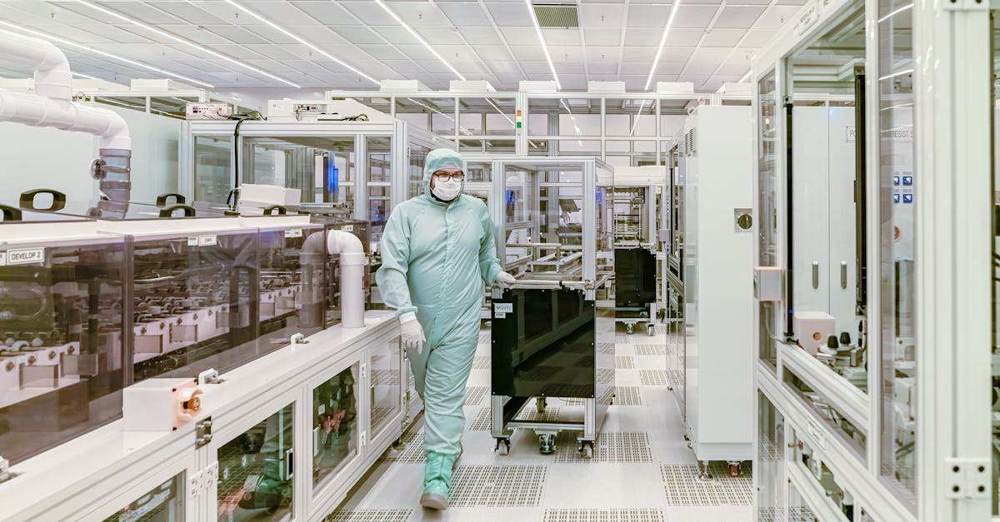

Les Échos de la Guerre sur les Chaînes d'Approvisionnement Technologiques
Le conflit qui secoue l'Europe de l'Est, et ses répercussions mondiales, soulève des inquiétudes grandissantes quant à la résilience des chaînes d'approvisionnement les plus vitales. Après avoir déjà subi les affres de la pandémie de COVID-19, le secteur des semi-conducteurs, pilier de notre économie numérique, se retrouve aujourd'hui en première ligne. Les tensions géopolitiques croissantes, les sanctions économiques et les perturbations logistiques menacent de créer une nouvelle crise, potentiellement plus dévastatrice encore que celle des masques ou des conteneurs maritimes. La question n'est plus de savoir si ces perturbations auront lieu, mais quand et quelle sera leur ampleur. Les entreprises ont-elles constitué des stocks suffisants pour traverser cette nouvelle tempête ? Les usines, souvent concentrées dans des zones géopolitiques sensibles, et les flux de matières premières critiques, comme le néon ou le palladium, indispensables à la fabrication des puces, sont autant de points de vulnérabilité. Ce contexte instable rappelle l'importance cruciale de la diversification et de la sécurisation des approvisionnements, des principes qui trouvent un écho particulier dans le monde des métaux précieux. L'or, valeur refuge par excellence, et les autres métaux précieux, dont certains sont aussi utilisés dans la production technologique, peuvent offrir une stabilité bienvenue dans un environnement aussi volatil. Les fluctuations des marchés, souvent exacerbées par les incertitudes géopolitiques, poussent de nombreux investisseurs à reconsidérer leurs portefeuilles. L'intelligence artificielle, appliquée au trading, offre une nouvelle approche pour naviguer ces complexités, en analysant des flux de données massifs pour anticiper les mouvements de marché. L'histoire nous a montré que les crises, bien que redoutables, ouvrent souvent la voie à de nouvelles opportunités pour ceux qui savent s'adapter. Les chaînes de production de puces, autrefois considérées comme invincibles, sont aujourd'hui le symbole d'une fragilité systémique qui nous oblige à repenser nos modèles économiques et nos stratégies d'investissement.
👉 À lire : Pétrole à 90$ : Hormuz, l'Or et l'IA, anticiper la tempête

Le Néon et le Palladium : Les Matières Premières au Cœur de la Crise
Au-delà des aspects macroéconomiques et géopolitiques, la crise des semi-conducteurs trouve ses racines dans la dépendance à des matières premières spécifiques, dont l'approvisionnement est aujourd'hui menacé. Le néon, gaz essentiel utilisé dans les lasers de lithographie pour graver les circuits sur les puces, est principalement produit en Ukraine. Les usines ukrainiennes, qui représentaient une part significative de l'approvisionnement mondial avant le conflit, ont vu leur production drastiquement réduite, voire stoppée. De même, le palladium, métal précieux du groupe du platine, est crucial pour certains processus de fabrication, notamment dans les catalyseurs automobiles, mais aussi dans certains composants électroniques avancés. La Russie étant l'un des principaux producteurs mondiaux de palladium, les sanctions et les perturbations commerciales impactent directement sa disponibilité et font flamber les prix. Ces dépendances géographiques créent des goulets d'étranglement majeurs. Les fabricants de puces, déjà sous tension depuis la pandémie, doivent désormais composer avec une incertitude accrue concernant l'accès à ces intrants fondamentaux. Les stocks existants, bien que parfois conséquents, ne pourront pas compenser indéfiniment une rupture d'approvisionnement prolongée. Les entreprises cherchent activement des sources alternatives, mais la mise en place de nouvelles capacités de production prend du temps et représente des investissements considérables. Cette situation met en lumière la fragilité des chaînes d'approvisionnement mondialisées et la nécessité pour les industries de repenser leur stratégie en matière de sourcing. Pour les investisseurs, la volatilité accrue sur les marchés des matières premières, y compris les métaux précieux comme le palladium, crée des opportunités, mais aussi des risques considérables. Une analyse fine, potentiellement assistée par des outils d'intelligence artificielle capables de traiter d'énormes volumes de données en temps réel, devient indispensable pour naviguer ces marchés complexes et identifier les tendances émergentes.
👉 À lire : Chine : La Révolution EV s'Accélère au Salon de Pékin 2026
L'Impact sur l'Industrie Électronique et au-delà
La crise potentielle des puces électroniques ne se limite pas au secteur technologique au sens strict. Elle résonne dans l'ensemble de l'économie mondiale, tant les semi-conducteurs sont devenus omniprésents. Des smartphones aux ordinateurs, des voitures aux équipements médicaux, en passant par les infrastructures critiques et les systèmes de défense, tout dépend aujourd'hui de ces composants minuscules mais essentiels. Une pénurie prolongée de puces entraînerait inévitablement des retards de production massifs pour de nombreux secteurs. Les constructeurs automobiles, déjà durement touchés par les pénuries post-pandémie, craignent une nouvelle vague d'arrêts de production. Les fabricants d'électronique grand public pourraient être contraints de limiter leurs nouveautés et d'augmenter leurs prix. L'impact pourrait même se faire sentir dans des domaines moins évidents, comme l'agriculture de précision ou les énergies renouvelables, qui s'appuient de plus en plus sur des systèmes électroniques sophistiqués. Les conséquences financières pourraient être considérables, avec des pertes de revenus estimées à des milliards de dollars pour les entreprises concernées. Les gouvernements sont également sous pression pour agir, que ce soit par des incitations à la relocalisation de la production de puces sur leur territoire ou par des efforts diplomatiques pour sécuriser les approvisionnements existants. L'Europe, en particulier, cherche à renforcer son autonomie stratégique dans ce domaine crucial. Cette interconnexion profonde entre la technologie, la géopolitique et l'économie mondiale souligne la complexité des marchés financiers actuels. Les métaux précieux, souvent considérés comme des actifs tangibles et stables, peuvent jouer un rôle de diversification important dans les portefeuilles face à ces risques systémiques. L'anticipation des mouvements de marché, facilitée par des algorithmes d'IA performants, devient un atout majeur pour les investisseurs cherchant à protéger leur capital.

Les Stratégies d'Entreprise Face à l'Incertitude : Stocks et Diversification
Face à la menace imminente d'une nouvelle crise d'approvisionnement en puces, les entreprises activent diverses stratégies pour tenter de limiter les dégâts. La première ligne de défense, souvent évoquée, concerne la constitution de stocks stratégiques. Les entreprises les plus prévoyantes avaient déjà augmenté leurs inventaires durant la pandémie, anticipant des difficultés. Cependant, la capacité à stocker des composants aussi critiques et coûteux est limitée, et la question demeure : ces stocks sont-ils suffisants pour absorber une perturbation majeure et prolongée ? La réponse varie considérablement d'une entreprise à l'autre, en fonction de leur pouvoir de négociation, de leur chaîne d'approvisionnement et de leur anticipation des risques. Une autre stratégie clé est la diversification des fournisseurs. Plutôt que de dépendre d'un ou deux grands fabricants, les entreprises cherchent à multiplier leurs sources d'approvisionnement, y compris géographiquement. Cela implique de travailler avec des fondeurs de puces situés dans différentes régions du monde, réduisant ainsi la dépendance à une seule zone géopolitique. Toutefois, cette diversification n'est pas une solution miracle ; elle demande du temps, des investissements et une réorganisation des processus logistiques. Certains acteurs explorent également la possibilité de modifier leurs designs de produits pour utiliser des puces plus facilement disponibles ou moins dépendantes des chaînes d'approvisionnement les plus fragiles. Enfin, la relocalisation ou la création de capacités de production plus proches des marchés de consommation est une tendance de fond, encouragée par les gouvernements, mais dont les effets concrets prendront des années à se matérialiser. Ces stratégies complexes nécessitent une visibilité sans précédent sur les flux de production et les marchés mondiaux. Des outils d'analyse avancés, comme ceux basés sur l'intelligence artificielle, sont de plus en plus sollicités pour aider les entreprises à modéliser ces scénarios et à prendre des décisions éclairées. Dans ce contexte d'incertitude, les métaux précieux, tels que l'or, continuent d'offrir une alternative tangible pour la préservation de valeur, indépendamment des aléas des chaînes de production high-tech.
Les Marchés Financiers : Réactions et Opportunités d'Investissement
Les marchés financiers, par nature réactifs aux nouvelles économiques et géopolitiques, n'ont pas manqué de réagir à la perspective d'une nouvelle crise des semi-conducteurs. Les actions des entreprises directement exposées, qu'il s'agisse de fabricants de puces, de fournisseurs d'équipements ou de constructeurs dépendants de ces composants, ont montré des signes de volatilité. Les investisseurs scrutent attentivement les annonces de résultats, les prévisions de production et les stratégies de gestion des stocks pour évaluer l'impact potentiel sur la rentabilité. Au-delà des entreprises technologiques, c'est l'ensemble des marchés qui est susceptible d'être affecté. Une perturbation généralisée de la production industrielle pourrait entraîner un ralentissement de la croissance économique mondiale, pesant sur les indices boursiers et les obligations. Dans ce climat d'incertitude, certains actifs traditionnellement considérés comme des valeurs refuges, comme l'or et certains autres métaux précieux, attirent de nouveau l'attention. Leur caractère tangible et leur histoire comme réserve de valeur en période de crise en font des candidats naturels pour les investisseurs cherchant à diversifier leurs portefeuilles et à se protéger contre la volatilité des marchés actions. Leurs prix peuvent réagir aux tensions géopolitiques et aux anticipations d'inflation, créant ainsi des opportunités de trading spécifiques. Par ailleurs, la crise des puces pourrait paradoxalement bénéficier à certaines entreprises ou secteurs qui proposent des solutions alternatives ou qui sont moins dépendants de ces composants critiques. L'innovation dans les matériaux, les processus de fabrication ou même les architectures de puces pourrait ouvrir de nouvelles perspectives. Pour naviguer ces eaux complexes, l'analyse des données massives et l'identification des tendances subtiles sont essentielles. L'intelligence artificielle, grâce à sa capacité à traiter et analyser des informations hétérogènes en temps réel, offre des outils puissants pour aider les traders et les investisseurs à prendre des décisions plus éclairées, que ce soit sur les marchés traditionnels ou sur ceux, plus spécifiques, des métaux précieux.

L'Or et les Métaux Précieux : Une Stabilité Face à la Volatilité Technologique
Dans un monde où les chaînes d'approvisionnement technologiques semblent de plus en plus fragiles, l'attrait pour les actifs tangibles et traditionnellement stables comme l'or et les métaux précieux ne cesse de croître. Alors que la fabrication des puces, et par extension une grande partie de notre économie numérique, est menacée par les conflits et les pénuries de matières premières, l'or conserve son statut de valeur refuge ultime. Son cours est moins directement lié aux cycles de production industrielle ou aux tensions géopolitiques spécifiques qui affectent les semi-conducteurs. Au contraire, l'incertitude économique et géopolitique globale, dont la crise des puces n'est qu'un symptôme, tend à soutenir la demande d'or. Les investisseurs se tournent vers le métal jaune pour préserver leur capital face à l'inflation potentielle, à la dévaluation des monnaies fiduciaires et à la volatilité accrue des marchés actions. D'autres métaux précieux, comme l'argent, le platine et le palladium, présentent également un intérêt, bien que leurs dynamiques de prix puissent être plus complexes. L'argent, par exemple, est utilisé dans de nombreuses applications industrielles, y compris dans l'électronique, ce qui peut le rendre sensible aux mêmes perturbations que les puces, mais il conserve aussi un rôle d'actif monétaire et de valeur refuge. Le platine et le palladium, outre leurs usages industriels (notamment dans l'automobile), sont des métaux précieux recherchés pour leur rareté et leur potentiel d'appréciation. La crise des puces, en affectant la demande de palladium pour les catalyseurs, crée une dynamique de prix particulière pour ce métal. La diversification vers les métaux précieux permet ainsi de contrebalancer les risques liés à la dépendance technologique. Pour les investisseurs avisés, l'utilisation d'outils d'analyse avancés, capables de décrypter les corrélations complexes entre les marchés, est essentielle. L'intelligence artificielle appliquée au trading de métaux précieux peut aider à identifier des opportunités dans la volatilité, en anticipant les réactions des marchés aux événements mondiaux.
L'Intelligence Artificielle comme Levier dans le Trading de Métaux Précieux
Alors que les chaînes d'approvisionnement en puces sont menacées et que la volatilité s'installe sur les marchés mondiaux, la nécessité d'outils d'investissement performants et réactifs n'a jamais été aussi grande. C'est dans ce contexte que l'intelligence artificielle (IA) révolutionne le trading, en particulier dans le domaine des métaux précieux. Les algorithmes d'IA sont capables d'analyser en temps réel des volumes de données astronomiques, bien au-delà des capacités humaines. Ils peuvent traiter des informations provenant de sources multiples et variées : actualités économiques et géopolitiques (comme les tensions sur les puces), indicateurs macroéconomiques, données de marché historiques, sentiment des réseaux sociaux, rapports d'analystes, et bien plus encore. En identifiant des patterns, des corrélations subtiles et des anomalies que les traders humains pourraient manquer, l'IA peut anticiper les mouvements de prix avec une précision accrue. Pour le trading de l'or et des métaux précieux, cela se traduit par une capacité à :
- Identifier les tendances émergentes plus tôt que le marché.
- Gérer le risque en temps réel en ajustant les positions en fonction des conditions de marché.
- Automatiser les décisions d'achat et de vente selon des stratégies prédéfinies et optimisées.
- Analyser l'impact des événements mondiaux, tels que les perturbations des chaînes d'approvisionnement, sur la valeur des métaux précieux.
- Optimiser les stratégies de portefeuille pour une meilleure diversification et une gestion plus efficace du risque.
L'idée n'est pas de remplacer l'investisseur, mais de lui fournir un outil puissant, un agent intelligent qui travaille sans relâche, 24h/24 et 7j/7, pour identifier les meilleures opportunités de trading. Là où un humain doit faire des pauses, se reposer et peut être sujet à des biais émotionnels, un agent IA reste focalisé et objectif. La crise des puces, en augmentant l'incertitude, renforce la pertinence de ces outils. Ils permettent de naviguer la complexité accrue des marchés et de potentiellement transformer les périodes de turbulence en occasions de gains significatifs, notamment sur les marchés de l'or et des métaux précieux, qui réagissent fortement aux changements de paradigme économique et géopolitique.
Sécuriser son Avenir Financier : L'Approche GoldTrade AI
Dans un paysage économique mondial de plus en plus incertain, marqué par des crises géopolitiques qui affectent des secteurs clés comme celui des semi-conducteurs, la préservation et la croissance du capital exigent des stratégies d'investissement innovantes et robustes. La volatilité accrue, les perturbations des chaînes d'approvisionnement et les tensions inflationnistes rendent les approches traditionnelles souvent insuffisantes. C'est précisément pour répondre à ces défis que GoldTrade AI a développé une solution unique : un agent IA sophistiqué dédié au trading de l'or et des métaux précieux. Notre technologie analyse en permanence les marchés, 24 heures sur 24, 7 jours sur 7, pour identifier les opportunités les plus prometteuses. L'IA de GoldTrade AI ne se contente pas de suivre les tendances ; elle anticipe les mouvements en s'appuyant sur une analyse prédictive avancée, capable de traiter des flux d'informations complexes et de réagir instantanément aux fluctuations du marché. Contrairement aux traders humains, notre agent IA n'est pas sujet à la fatigue, aux émotions ou aux biais cognitifs. Il exécute des stratégies de trading optimisées avec une discipline rigoureuse, visant à maximiser les rendements tout en gérant activement les risques. L'actualité concernant la fragilité des chaînes d'approvisionnement en puces souligne l'importance de diversifier ses actifs et de s'appuyer sur des instruments financiers résilients. L'or, en tant que valeur refuge historique, et les métaux précieux, dont les dynamiques sont complexes mais potentiellement lucratives, constituent une classe d'actifs essentielle dans un portefeuille bien équilibré. GoldTrade AI vous offre la possibilité de bénéficier de l'expertise de l'intelligence artificielle pour naviguer ces marchés complexes, même lorsque les événements mondiaux créent des ondes de choc dans l'économie. Investir sereinement dans un monde en mutation n'est plus un rêve, c'est une possibilité offerte par la technologie. Notre solution est conçue pour les investisseurs qui cherchent à protéger leur patrimoine et à le faire fructifier de manière proactive, en tirant parti de la puissance de l'IA pour saisir les opportunités là où elles se présentent, quelle que soit l'heure.
Conclusion : Naviguer l'Incertitude avec Confiance
La menace d'une nouvelle crise des puces électroniques, exacerbée par les tensions géopolitiques, agit comme un puissant rappel de la fragilité des chaînes d'approvisionnement mondiales et de l'interconnexion de notre économie. Des matières premières critiques comme le néon et le palladium aux produits finis qui nous entourent, la moindre perturbation peut avoir des conséquences en cascade, affectant non seulement l'industrie technologique mais aussi l'ensemble des marchés financiers. Dans ce contexte d'incertitude croissante, la recherche de stabilité et de résilience devient primordiale pour les investisseurs. Les actifs traditionnels comme l'or et les métaux précieux, reconnus pour leur capacité à préserver la valeur en période de turbulence, reprennent une place centrale dans les stratégies de diversification. Cependant, naviguer la complexité et la volatilité de ces marchés exige des outils toujours plus performants. L'intelligence artificielle s'impose comme une solution clé, offrant une capacité d'analyse sans précédent et une exécution de trading 24/7. Des agents IA comme ceux proposés par GoldTrade AI permettent d'exploiter les opportunités, même dans les environnements les plus instables, en analysant des données massives pour prendre des décisions éclairées et disciplinées. L'histoire nous enseigne que les périodes de crise sont souvent porteuses d'opportunités pour ceux qui savent s'adapter et utiliser les nouvelles technologies à leur avantage. Sécuriser son avenir financier face aux aléas géopolitiques et économiques demande une approche proactive et innovante. En combinant la sagesse éprouvée des métaux précieux avec la puissance prédictive de l'IA, il est possible de transformer l'incertitude en un levier de croissance pour votre patrimoine.